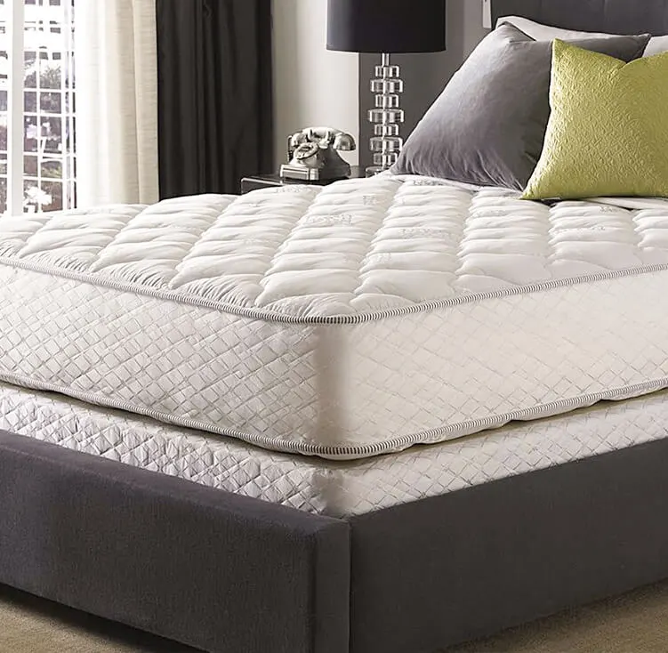
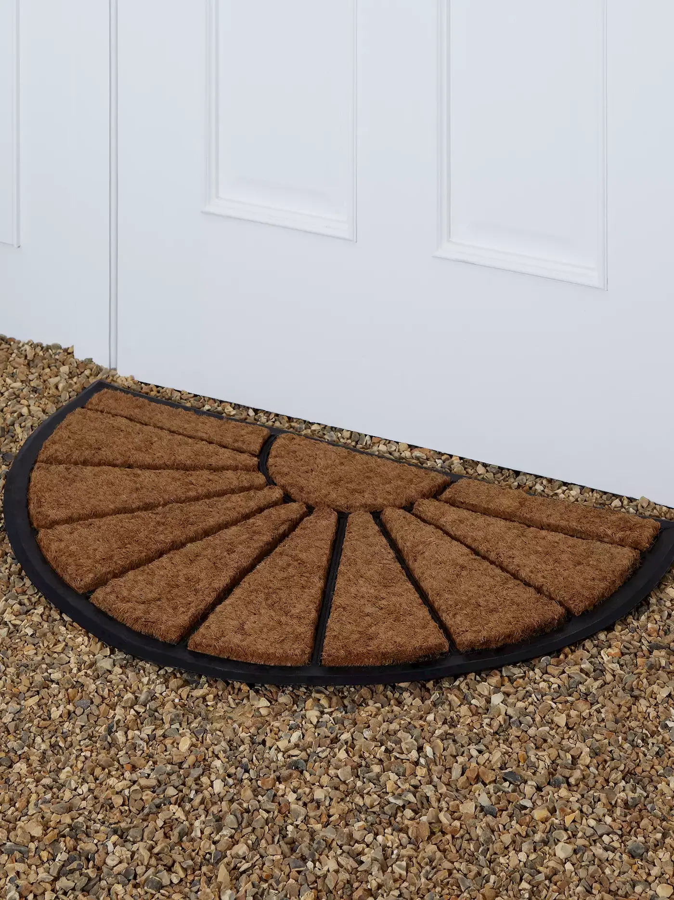
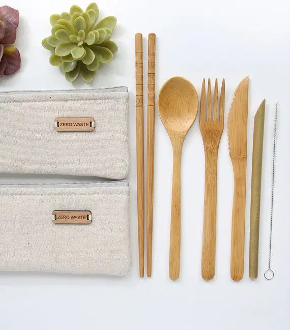

Green life along with our manufacturers provide different varieties of Environmentally friendly products.
The eco-friendly bags by green life are more stronger than the plastic bags which are used by most of the population these days. Moreover,green life’s eco-friendly bags are reusable compare to the plastic bags.
Futhermore, the bags produced by our manufacturers are more confortable to hold than the normal plastic bags since you can hold them with all five fingures.
Our mattresses are made up of coir inorder to enhance a good and comfortable sleep for our customers. Since it cools down the body temperature than other mattress.
These matress also has health fresh technology that protect us from harmful diseases such as asthma.
These lighter and versatile, environmentally friendly door mats are manufactured by Inter Coir Limited for indoor environments to extract dirt form outside your home.
Moreover,Coir Door Mats prevents injuries when you enter a smooth surface as they absorb water while placing our legs.
Utensils in Green Life was made for customers to enjoy their food by joy and also to maintain a healthier life.
Furthermore, if the lifespan of these utensils ends, it can be just thrown away to the land since they will get decomposed in the ground naturally.
| Product | Feature | Benefit | Cost | Manufacturer |
| Eco-Friendly Bags | Stronger and durable | Can carry heavy loads with less pressure on hands. | Rs.180 | Eco Products |
| Eco-Friendly Mattresses | Made up of Coir | Provide cooling sensation to the body. |
|
Hayleys Fibre |
| Coir Door Mats | Tight grip between the floor and mat | Less slippery |
|
Inter Coir Limited |
| Eco-friendly Utensils | Manufactured by woods | It does not contain harmful plastic substances. |
|
Green Plastics | Green Life © |